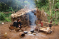
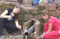

| ACCUEIL |
NOUVELLES |
QUI NOUS SOMMES |
NOTRE TRAVAIL |
NOUS SOUTENIR |
MEDIAS |
PARTENAIRES |
CONTACT |


Depuis plus d’une décennie, Hope Foundation a été activement impliquée dans plusieurs projets majeurs tant au Cameroun qu’en Allemagne. Chacun de ces projets est entrepris avec l’intention d’atteindre son objectif central : alléger la pauvreté et instruire la population dans de but d’éveiller et d’autonomiser les communautés défavorisées du Cameroun.
Hope Foundation, en collaboration avec 15 étudiants en architecture de l'Université technique de Berlin s'emploient à concevoir et à construire une école primaire, dans la ville de Bertoua, la région de l'Est du Cameroun. ...read more
 Berlin, 16 July 2011 – Hope Foundation teams up once again with one of Berlin’s most popular cultural beach bars, Yaam, near Ostbahnhof, on Saturday, 16 July, to hold its annual fundraising event, Barefoot for Africa. ...read more
Berlin, 16 July 2011 – Hope Foundation teams up once again with one of Berlin’s most popular cultural beach bars, Yaam, near Ostbahnhof, on Saturday, 16 July, to hold its annual fundraising event, Barefoot for Africa. ...read more
 Bridging Cultures est un « programme global d’éducation aux cultures », avec pour but principal de promouvoir les relations interculturelles et de sensibiliser les étudiants à Berlin sur les problèmes de développement auxquels font face les pays en voie de développement. ...read more
Bridging Cultures est un « programme global d’éducation aux cultures », avec pour but principal de promouvoir les relations interculturelles et de sensibiliser les étudiants à Berlin sur les problèmes de développement auxquels font face les pays en voie de développement. ...read more
 Le principal but de ce projet est d’autonomiser les minorités Mbororos et les Pygmées Baka dans l’est du Cameroun en portant à leur connaissance leurs droits et leurs devoirs et en leur permettant de mettre à profit leurs propres capacités. ...read more
 Hope Foundation est impliqué dans des programmes d’installation de sanitaires dans les régions parmi les plus pauvres du Cameroun. ...read more
 L’hygiène buccale et l’importance de l'usage correct d’une brosse à dents est extrêmement important dans toutes les sociétés, mais dans certaines régions du Cameroun, le constat est alarmant. Le principal problème est que la plupart des enfants de ces régions reculées du Cameroun n’ont pas grandi en utilisant une brosse à dent. ...read more
L’hygiène buccale et l’importance de l'usage correct d’une brosse à dents est extrêmement important dans toutes les sociétés, mais dans certaines régions du Cameroun, le constat est alarmant. Le principal problème est que la plupart des enfants de ces régions reculées du Cameroun n’ont pas grandi en utilisant une brosse à dent. ...read more
 Le projet d’initiation à l’informatique de Hope Foundation collecte des ordinateurs donnés par des particuliers et des commerces et les envoie au Cameroun où ils sont utilisés pour apprendre leur usage aux adolescents, femmes et étudiants dans les zones rurales et dans les écoles. ...read more
Le projet d’initiation à l’informatique de Hope Foundation collecte des ordinateurs donnés par des particuliers et des commerces et les envoie au Cameroun où ils sont utilisés pour apprendre leur usage aux adolescents, femmes et étudiants dans les zones rurales et dans les écoles. ...read more
 Depuis le début, Hope Foundation soutient un certain nombre d’écoles, d’orphelinats et de centres culturels. Notre subventionnement et notre initiative de bourses d’étude servent d’outil principal pour motiver et améliorer les capacités et le travail de nombreuses personnes et institutions dans les entreprises camerounaises locales. ...read more
Depuis le début, Hope Foundation soutient un certain nombre d’écoles, d’orphelinats et de centres culturels. Notre subventionnement et notre initiative de bourses d’étude servent d’outil principal pour motiver et améliorer les capacités et le travail de nombreuses personnes et institutions dans les entreprises camerounaises locales. ...read more
 Chaque année en décembre, Hope Foundation soutient des enfants d'orphelinats et de zones locales en leur donnant divers cadeaux sous la forme de jouets, de fournitures scolaires, de médicaments et d’habillement. ...read more
Chaque année en décembre, Hope Foundation soutient des enfants d'orphelinats et de zones locales en leur donnant divers cadeaux sous la forme de jouets, de fournitures scolaires, de médicaments et d’habillement. ...read more
 Le VIH/SIDA reste l’une des préoccupations principales du Cameroun et de l’Afrique en général. Hope Foundation mène dans les communautés rurales un combat afin de réduire la propagation de la maladie à travers un large nombre de programmes d’éducation, de formation pédagogique et de sensibilisation. ...read more
Le VIH/SIDA reste l’une des préoccupations principales du Cameroun et de l’Afrique en général. Hope Foundation mène dans les communautés rurales un combat afin de réduire la propagation de la maladie à travers un large nombre de programmes d’éducation, de formation pédagogique et de sensibilisation. ...read more
 Le projet « malaria-free Cameroun » est une initiative lancée par Hope Foundation pour empêcher les populations locales de contracter la malaria. ...read more
Le projet « malaria-free Cameroun » est une initiative lancée par Hope Foundation pour empêcher les populations locales de contracter la malaria. ...read more
 Le projet Shoe Aid vise à collecter des chaussures dans les pays développés, à les transporter en Afrique, pour ensuite les distribuer gratuitement aux enfants et familles du Cameroun et de pays voisins. ...read more
Le projet Shoe Aid vise à collecter des chaussures dans les pays développés, à les transporter en Afrique, pour ensuite les distribuer gratuitement aux enfants et familles du Cameroun et de pays voisins. ...read more